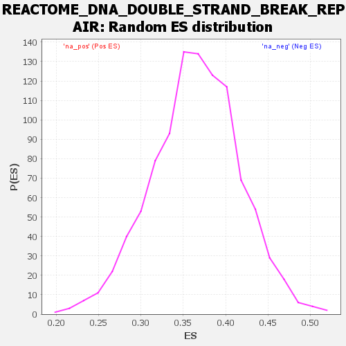

Profile of the Running ES Score & Positions of GeneSet Members on the Rank Ordered List
| Dataset | DGErankName |
| Phenotype | NoPhenotypeAvailable |
| Upregulated in class | na_neg |
| GeneSet | REACTOME_DNA_DOUBLE_STRAND_BREAK_REPAIR |
| Enrichment Score (ES) | -0.22252083 |
| Normalized Enrichment Score (NES) | NaN |
| Nominal p-value | NaN |
| FDR q-value | 1.0 |
| FWER p-Value | 0.0 |
| SYMBOL | RANK IN GENE LIST | RANK METRIC SCORE | RUNNING ES | CORE ENRICHMENT | |
|---|---|---|---|---|---|
| 1 | H2BC21 | 764 | 2.056 | -0.0217 | No |
| 2 | TP53 | 911 | 1.914 | -0.0045 | No |
| 3 | KDM4A | 1197 | 1.696 | 0.0004 | No |
| 4 | PARP2 | 1519 | 1.530 | 0.0006 | No |
| 5 | XRCC2 | 1932 | 1.363 | -0.0075 | No |
| 6 | BRCC3 | 2187 | 1.258 | -0.0067 | No |
| 7 | SUMO1 | 2261 | 1.235 | 0.0058 | No |
| 8 | POLE4 | 2591 | 1.133 | -0.0001 | No |
| 9 | POLM | 2750 | 1.087 | 0.0047 | No |
| 10 | DCLRE1C | 3026 | 1.003 | 0.0006 | No |
| 11 | RAD50 | 3275 | 0.940 | -0.0026 | No |
| 12 | BAZ1B | 3370 | 0.918 | 0.0040 | No |
| 13 | FIGNL1 | 3401 | 0.912 | 0.0148 | No |
| 14 | WRN | 3842 | 0.811 | -0.0029 | No |
| 15 | RPS27A | 3871 | 0.805 | 0.0065 | No |
| 16 | EME2 | 3898 | 0.796 | 0.0159 | No |
| 17 | PPP4R2 | 3952 | 0.783 | 0.0234 | No |
| 18 | RPA1 | 4058 | 0.760 | 0.0271 | No |
| 19 | LIG4 | 4101 | 0.749 | 0.0348 | No |
| 20 | PAXIP1 | 4428 | 0.678 | 0.0228 | No |
| 21 | UBE2V2 | 4492 | 0.663 | 0.0279 | No |
| 22 | H2BC4 | 4506 | 0.661 | 0.0363 | No |
| 23 | KDM4B | 4568 | 0.643 | 0.0413 | No |
| 24 | RFC1 | 4845 | 0.586 | 0.0312 | No |
| 25 | HERC2 | 4952 | 0.562 | 0.0321 | No |
| 26 | ATM | 5097 | 0.524 | 0.0299 | No |
| 27 | ERCC4 | 5147 | 0.515 | 0.0339 | No |
| 28 | MRE11 | 5179 | 0.506 | 0.0389 | No |
| 29 | ABL1 | 5190 | 0.504 | 0.0453 | No |
| 30 | H2BC8 | 5446 | 0.453 | 0.0348 | No |
| 31 | MAPK8 | 5533 | 0.434 | 0.0352 | No |
| 32 | PRKDC | 5558 | 0.427 | 0.0396 | No |
| 33 | GEN1 | 5797 | 0.383 | 0.0293 | No |
| 34 | ATR | 5833 | 0.376 | 0.0322 | No |
| 35 | CHEK2 | 5905 | 0.358 | 0.0325 | No |
| 36 | H2BC7 | 5984 | 0.341 | 0.0322 | No |
| 37 | H4C9 | 6324 | 0.271 | 0.0136 | No |
| 38 | BRCA2 | 6396 | 0.257 | 0.0125 | No |
| 39 | RBBP8 | 6675 | 0.208 | -0.0030 | No |
| 40 | UBXN1 | 6703 | 0.205 | -0.0019 | No |
| 41 | TP53BP1 | 6896 | 0.175 | -0.0121 | No |
| 42 | NHEJ1 | 6938 | 0.168 | -0.0125 | No |
| 43 | H2BC12 | 6960 | 0.164 | -0.0115 | No |
| 44 | UBA52 | 6965 | 0.163 | -0.0095 | No |
| 45 | H2BC17 | 7163 | 0.127 | -0.0208 | No |
| 46 | PALB2 | 7169 | 0.126 | -0.0193 | No |
| 47 | H2BC14 | 7253 | 0.115 | -0.0232 | No |
| 48 | H2BC13 | 7277 | 0.111 | -0.0232 | No |
| 49 | POLE2 | 7354 | 0.100 | -0.0268 | No |
| 50 | ERCC1 | 7520 | 0.077 | -0.0366 | No |
| 51 | TDP2 | 7905 | 0.027 | -0.0616 | No |
| 52 | CHEK1 | 7909 | 0.027 | -0.0614 | No |
| 53 | H2BC9 | 7932 | 0.023 | -0.0625 | No |
| 54 | H2BC3 | 7938 | 0.022 | -0.0625 | No |
| 55 | TOPBP1 | 8034 | 0.011 | -0.0687 | No |
| 56 | RAD9A | 8189 | -0.007 | -0.0787 | No |
| 57 | XRCC5 | 8197 | -0.007 | -0.0791 | No |
| 58 | FEN1 | 8244 | -0.013 | -0.0819 | No |
| 59 | RPA2 | 8314 | -0.019 | -0.0862 | No |
| 60 | TIPIN | 8748 | -0.067 | -0.1139 | No |
| 61 | EME1 | 8820 | -0.076 | -0.1175 | No |
| 62 | H2BC1 | 9077 | -0.106 | -0.1329 | No |
| 63 | PCNA | 9204 | -0.117 | -0.1396 | No |
| 64 | RAD9B | 9219 | -0.119 | -0.1388 | No |
| 65 | PPP5C | 9343 | -0.130 | -0.1451 | No |
| 66 | H2BC15 | 9355 | -0.131 | -0.1440 | No |
| 67 | XRCC4 | 9397 | -0.135 | -0.1449 | No |
| 68 | SUMO2 | 9420 | -0.137 | -0.1444 | No |
| 69 | BRIP1 | 9438 | -0.139 | -0.1436 | No |
| 70 | RAD51D | 9471 | -0.142 | -0.1437 | No |
| 71 | BABAM1 | 9482 | -0.142 | -0.1424 | No |
| 72 | POLQ | 9602 | -0.153 | -0.1481 | No |
| 73 | POLK | 9667 | -0.160 | -0.1501 | No |
| 74 | BLM | 9670 | -0.160 | -0.1480 | No |
| 75 | PARP1 | 9896 | -0.177 | -0.1603 | No |
| 76 | H2BC11 | 9935 | -0.180 | -0.1603 | No |
| 77 | DNA2 | 10005 | -0.185 | -0.1623 | No |
| 78 | XRCC3 | 10022 | -0.186 | -0.1607 | No |
| 79 | PPP4C | 10343 | -0.210 | -0.1789 | No |
| 80 | SEM1 | 10441 | -0.218 | -0.1823 | No |
| 81 | RIF1 | 10567 | -0.226 | -0.1874 | No |
| 82 | BARD1 | 10621 | -0.230 | -0.1877 | No |
| 83 | TDP1 | 10622 | -0.230 | -0.1844 | No |
| 84 | RPA3 | 10691 | -0.235 | -0.1856 | No |
| 85 | RAD51AP1 | 10745 | -0.239 | -0.1858 | No |
| 86 | POLE3 | 10774 | -0.241 | -0.1843 | No |
| 87 | RNF168 | 10959 | -0.255 | -0.1929 | No |
| 88 | RNF8 | 10976 | -0.256 | -0.1903 | No |
| 89 | H4C8 | 11029 | -0.260 | -0.1901 | No |
| 90 | UBE2N | 11195 | -0.273 | -0.1972 | No |
| 91 | RAD51B | 11223 | -0.275 | -0.1951 | No |
| 92 | EYA1 | 11391 | -0.288 | -0.2021 | No |
| 93 | RAD1 | 11404 | -0.289 | -0.1989 | No |
| 94 | MDC1 | 11419 | -0.291 | -0.1957 | No |
| 95 | BRCA1 | 11623 | -0.308 | -0.2048 | No |
| 96 | SIRT6 | 11794 | -0.322 | -0.2115 | No |
| 97 | H4C2 | 11842 | -0.326 | -0.2101 | No |
| 98 | CLSPN | 11950 | -0.335 | -0.2124 | No |
| 99 | NBN | 12009 | -0.342 | -0.2115 | No |
| 100 | CDK2 | 12177 | -0.358 | -0.2175 | Yes |
| 101 | CCNA1 | 12186 | -0.359 | -0.2130 | Yes |
| 102 | BABAM2 | 12201 | -0.361 | -0.2089 | Yes |
| 103 | EYA4 | 12260 | -0.366 | -0.2076 | Yes |
| 104 | XRCC6 | 12290 | -0.368 | -0.2044 | Yes |
| 105 | MUS81 | 12437 | -0.383 | -0.2086 | Yes |
| 106 | HUS1 | 12468 | -0.386 | -0.2052 | Yes |
| 107 | SMARCA5 | 12523 | -0.391 | -0.2033 | Yes |
| 108 | EXO1 | 12646 | -0.405 | -0.2057 | Yes |
| 109 | RMI2 | 12780 | -0.420 | -0.2086 | Yes |
| 110 | POLH | 12801 | -0.422 | -0.2040 | Yes |
| 111 | TIMELESS | 12881 | -0.433 | -0.2032 | Yes |
| 112 | KPNA2 | 12889 | -0.434 | -0.1976 | Yes |
| 113 | NSD2 | 12917 | -0.437 | -0.1932 | Yes |
| 114 | ABRAXAS1 | 12947 | -0.441 | -0.1890 | Yes |
| 115 | RFC3 | 12972 | -0.444 | -0.1843 | Yes |
| 116 | RAD51C | 13000 | -0.447 | -0.1799 | Yes |
| 117 | RFC5 | 13006 | -0.447 | -0.1739 | Yes |
| 118 | RFC4 | 13033 | -0.451 | -0.1694 | Yes |
| 119 | XRCC1 | 13035 | -0.451 | -0.1631 | Yes |
| 120 | SLX4 | 13076 | -0.456 | -0.1594 | Yes |
| 121 | POLD3 | 13095 | -0.457 | -0.1542 | Yes |
| 122 | RHNO1 | 13130 | -0.462 | -0.1500 | Yes |
| 123 | POLL | 13319 | -0.488 | -0.1555 | Yes |
| 124 | EYA2 | 13375 | -0.497 | -0.1522 | Yes |
| 125 | RAD52 | 13411 | -0.502 | -0.1475 | Yes |
| 126 | BAP1 | 13539 | -0.520 | -0.1486 | Yes |
| 127 | UIMC1 | 13591 | -0.530 | -0.1446 | Yes |
| 128 | CCNA2 | 13658 | -0.540 | -0.1414 | Yes |
| 129 | RAD51 | 13708 | -0.547 | -0.1369 | Yes |
| 130 | EYA3 | 13740 | -0.555 | -0.1312 | Yes |
| 131 | ATRIP | 13746 | -0.556 | -0.1238 | Yes |
| 132 | UBC | 13883 | -0.578 | -0.1247 | Yes |
| 133 | UBE2I | 13886 | -0.578 | -0.1167 | Yes |
| 134 | UBB | 14032 | -0.610 | -0.1177 | Yes |
| 135 | TOP3A | 14088 | -0.621 | -0.1127 | Yes |
| 136 | APBB1 | 14155 | -0.636 | -0.1081 | Yes |
| 137 | H4C6 | 14229 | -0.655 | -0.1038 | Yes |
| 138 | LIG3 | 14232 | -0.655 | -0.0947 | Yes |
| 139 | PIAS4 | 14326 | -0.676 | -0.0914 | Yes |
| 140 | POLE | 14365 | -0.686 | -0.0843 | Yes |
| 141 | H2BC10 | 14442 | -0.708 | -0.0794 | Yes |
| 142 | RAD17 | 14500 | -0.731 | -0.0730 | Yes |
| 143 | SLX1A | 14663 | -0.793 | -0.0726 | Yes |
| 144 | H2AX | 14726 | -0.825 | -0.0651 | Yes |
| 145 | RNF4 | 14762 | -0.842 | -0.0556 | Yes |
| 146 | POLD1 | 14779 | -0.850 | -0.0448 | Yes |
| 147 | SPIDR | 15046 | -1.045 | -0.0477 | Yes |
| 148 | POLD2 | 15071 | -1.079 | -0.0342 | Yes |
| 149 | KAT5 | 15077 | -1.083 | -0.0194 | Yes |
| 150 | H3-4 | 15099 | -1.111 | -0.0052 | Yes |
| 151 | RFC2 | 15175 | -1.297 | 0.0080 | Yes |
